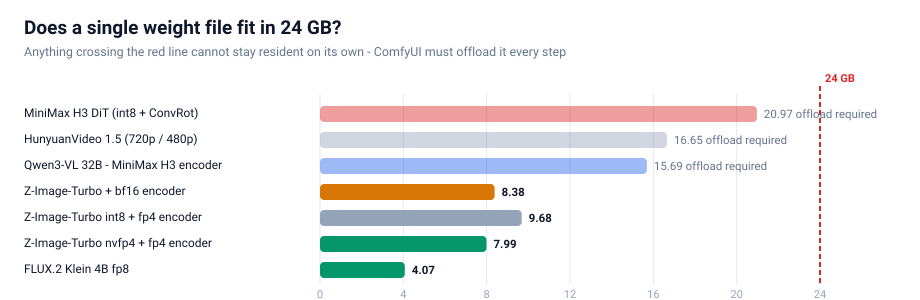
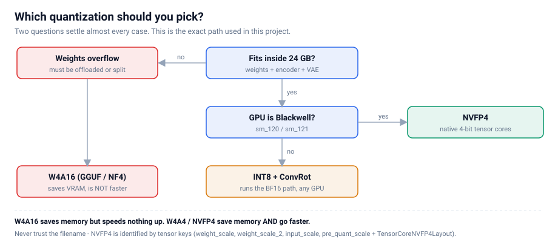
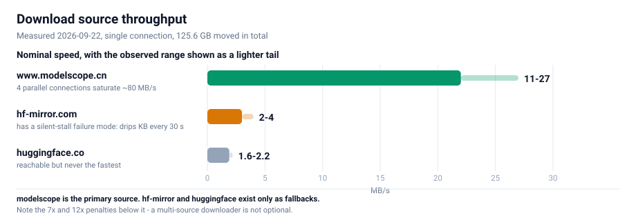
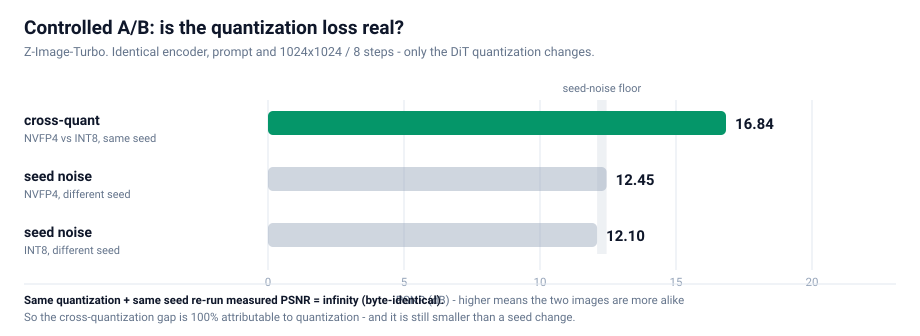
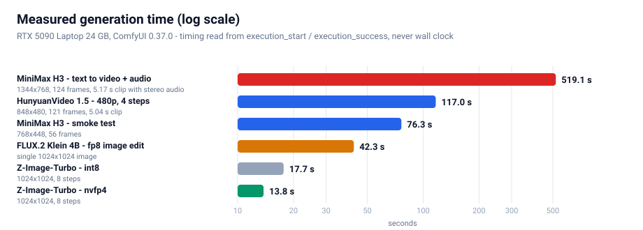
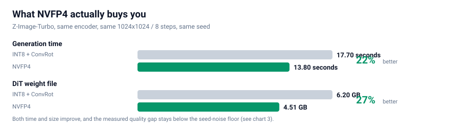

一句话结论：在 24 GB 显存的笔记本 GPU 上，我们跑通了 4 条最新开源生成模型线（共 6 个工作流），
并用受控实验证明 NVFP4 是这台机器上的最佳量化格式 —— 比 INT8 快 22%、小 27%，
而画质差异落在随机噪声地板之下。
这不是一份"把命令贴一遍"的教程。真正难的不是跑通某个模型，而是在几十个量化版本里判断该选哪一个。
本文把我们的完整决策链摊开：怎么想、怎么下、怎么搭、怎么测、怎么选。所有数字都是本机实测，
所有结论都附带可复现的测量方法。
目录
| 章节 |
内容 |
你会得到 |
| 0 |
硬件与起点 |
知道硬约束在哪 |
| 1 |
先说结论 |
一张表看完所有选型 |
| 2 |
怎么想 |
量化格式的完整心智模型 |
| 3 |
怎么下 |
125.6 GB 的多源下载工程 |
| 4 |
怎么搭 |
踩坑换来的节点约束清单 |
| 5 |
怎么测 |
量化判定的方法论（全文核心） |
| 6 |
怎么选 |
每个模型的实战与基准 |
| 7 |
优化清单 |
可直接抄的配置 |
| 8 |
踩坑速查 |
症状 → 原因 → 解法 |
| 9 |
工具链 |
六个可复用脚本 |
| 10 |
结论与后续 |
还没做的事 |
0. 硬件与起点
| 项目 |
实测值 |
| GPU |
RTX 5090 Laptop —— 24435 MiB（24 GB），算力 sm_120（Blackwell） |
| CUDA |
12.8 |
| 内存 |
64 GB |
| 引擎 |
ComfyUI 0.37.0 / PyTorch 2.11.0+cu128 / Python 3.11.9 |
| 目标 |
尽量用最新的开源模型，跑通图像 / 视频 / 音乐三类生成 |
为什么从 24 GB 讲起？ 因为它是这份手册里唯一真正的硬约束。
笔记本 GPU 的算力永远是"够用"的 —— 一个 8 步蒸馏模型在 5090 上出 1024² 图只要十几秒。
真正决定你能跑什么、不能跑什么的，是显存能不能装下。而最新一代开源生成模型的一个共同趋势是：
主模型越来越大，而且都要求配一个独立的、同样巨大的文本编码器。
看下面这张图，注意那条 24 GB 红线：

三条线（MiniMax H3 的 DiT 21 GB、HunyuanVideo 1.5 的 16.7 GB、MiniMax H3 的文本编码器 15.7 GB）
每一个单独拿出来就超过了 24 GB。这意味着：
它们不可能常驻显存。 每生成一帧，权重都必须在显存和内存之间搬运。
这就是为什么"选对量化格式"在这台机器上不是优化，而是能不能跑的问题。
1. 先说结论（TL;DR）
1.1 选型总表
| 用途 |
选定模型 |
量化格式 |
实测耗时 |
备注 |
| 图像生成 |
Z-Image-Turbo |
NVFP4（4.51 GB） |
13.8 s（1024²/8步） |
中文文字渲染准确，8 步出图 |
| 图像编辑 |
FLUX.2 Klein 4B |
fp8（4.07 GB） |
42.3 s |
9B 版被编码器卡住，见 §6.5 |
| 视频 + 音频 |
MiniMax H3 |
int8 + ConvRot |
519.1 s（1344×768/124帧） |
原生带音轨，5.17 s 视频含立体声 |
| 纯视频 |
HunyuanVideo 1.5 480p |
fp16 + LightX2V 4步 LoRA |
117.0 s（848×480/121帧） |
4 步出片，适合迭代 |
1.2 三条可以直接拿去用的规则
- 量化格式：只要显卡是 Blackwell（sm_120/121），一律选 NVFP4。 见 §5 的证明。
- 要不要 offload：看"主模型 + 编码器"之和是否超过显存。 超过了就必须 offload，
这时量化省下的每一 GB 都会直接换成速度。
- 提速靠"少走步数"，不靠"压权重"。 8 步 → 4 步的 LoRA 收益远大于任何权重量化。
量化负责装得下，蒸馏 LoRA 负责跑得快。两者不是一回事。
2. 怎么想：先把约束想清楚
2.1 唯一的硬约束是显存，不是算力
这一点值得反复强调，因为它决定了后面所有的取舍。
一个很常见的错误直觉是："显存不够就换个小模型。"但看 §0 那张图 —— 我们要的都是最新最强的模型，
它们没有小号版本。唯一能动的变量是权重用什么精度存。
于是问题被压缩成一句话：在肉眼无差别的前提下，用多少 bit 存权重最划算？
2.2 量化格式的四个流派（这是全文的地基）
市面上"4-bit 量化"这个说法把三件完全不同的事混在了一起。必须先拆开：
| 流派 |
代表 |
压什么 |
省显存 |
提速 |
| W4A16 |
GGUF / NF4 / bitsandbytes / torchao |
只压权重 |
✅ |
❌ 不提速，甚至更慢 |
| W4A4 |
Nunchaku SVDQuant |
权重 + 激活都压 |
✅ |
✅ |
| INT8 + ConvRot |
Comfy-Org 新模型默认 |
权重 8-bit + 旋转补偿 |
✅ |
➖ 走 BF16 路径，不提速 |
| NVFP4 |
Blackwell 原生 4-bit 浮点 |
权重 + 激活 |
✅ |
✅ 最快 |
这张表里最重要的一行是第一行。
W4A16 只把权重压小，计算时还要还原回 16-bit，于是显存省了，但算力一点没省，反而多了反量化的开销。
很多人"换了 4-bit 模型发现更慢"，原因就在这里。
一句话记住：W4A16 省的是内存，W4A4 / NVFP4 省的是内存 + 带宽。
只有后者会真的快。
NVFP4 之所以在这台机器上最优，是因为它是 Blackwell 架构原生的 4-bit 浮点格式，
可以直接喂给 tensor core 做 4-bit 矩阵乘 —— 不需要"先还原再算"。
2.3 怎么识别"真的 NVFP4"（千万不要看文件名）
这是踩过的坑：社区里大量文件名写着 fp4 / nvfp4 的模型，其实是别的量化格式，
或者只有部分层是 4-bit。
唯一可靠的判据是 safetensors 里的张量键。 打开文件的 header（前 8 字节小端 uint64 = header 长度 → JSON），
看是否存在这套键：
weight_scale
weight_scale_2
input_scale
pre_quant_scale
TensorCoreNVFP4Layout (group_size = 16)
本机校验通过的真 NVFP4 文件，dtype 列表里会同时出现 F8_E4M3（用于 block scale）和 U8。例如：
z_image_turbo_nvfp4.safetensors 4.51 GB 993 tensors BF16, F32, F8_E4M3, U8 ✅ 真 NVFP4
qwen_3_4b_fp4_mixed.safetensors 3.48 GB 1081 tensors BF16, F32, F8_E4M3, U8 ✅ 真 NVFP4
下面这张决策树就是完整的选型逻辑：

3. 怎么下：把 125.6 GB 拉下来
下载这件事看着简单，但125.6 GB × 不稳定的源足以让一个天真实现跑一整天。
先说结论：我们最后跑了 34 个文件 / 125.6 GB / 零损坏，核心是三个机制。
3.1 三个源的速度实测

差距是量级级别的：modelscope 比 hf-mirror 快 7 倍、比 huggingface 快 12 倍。
所以"多源回退"不是锦上添花，而是必需品。
3.2 机制一：三级回退
每个文件依次尝试： www.modelscope.cn → hf-mirror.com → huggingface.co
一旦某个源失败，退到下一个；.part 断点文件可以跨源复用（两端字节一致，已验证）。
3.3 机制二：静默看门狗（这个必须有）
这是我们踩得最深的坑。
最初我们只设了 45 秒 socket 超时。结果一个文件卡在 4.6%，速度 0.0 MB/s，持续 19 分钟都不报错。
原因很阴险：服务器每 30 秒吐几 KB，刚好让 socket 不超时，但实际毫无进展。
教训：socket 超时抓不住"慢速滴血"型挂死。必须再加一层业务层看门狗：
连续 150 秒接收字节数实质无增长 → 主动断开重连；连续 3 次静默 → 放弃本源，交给上层换源。
加上这层之后，同样的网络环境下再没有出现过"无限挂死"。
3.4 机制三：Range 探测 + 并行
modelscope 不支持 HEAD 请求（返回 405/不支持），拿不到文件大小就没法校验。
解法是用 Range 请求探一个字节，从响应头读总长度：
Range: bytes=0-0
→ HTTP/1.1 206 Partial Content
Content-Range: bytes 0-0/16748116224 # ← 这就是真实字节数
拿到期望字节数后，就能做到三件事：
- 并发探尺寸（不下载，只探）→ 提前知道总量、排优先级
- 下载后逐字节比对 → 精确识别截断/损坏
- 两个源交叉验证 → 同一文件的字节数应当一致
3.5 一条元经验：判断"源是否可用"必须避开下载高峰
我们因此误判过一次：当时 4 路并发正在满速下载，此时去探测其它源，所有探测请求全部超时，
于是我们得出错误结论——"这两个源都不可用，需要用户手动下载"。
实际上它们都好得很，只是带宽被打满了。
教训：探测型请求（探速度、探可用性）和下载型请求会互相抢带宽。
要么在空闲时探测，要么给探测单独限速。
4. 怎么搭：ComfyUI 的节点约束
模型下完了，接下来是把它变成一张能跑的图。ComfyUI 的官方工作流藏在两个地方：
ComfyUI/blueprints/*.json —— 116 个官方蓝图site-packages/comfyui_workflow_templates_json/templates/ —— 同一套模板
但它们不能直接当 API prompt 提交，因为是子图（subgraph）格式：节点类型是 UUID，真正的图结构藏在
definitions.subgraphs 里。我们写了 bp_dump.py 把子图解析成「节点 + 连线」清单，比手工猜拓扑可靠得多。
4.1 四个必须知道的节点约束
| # |
约束 |
说明 |
| 1 |
CLIPLoader 的 29 个 type 里没有 hunyuan_video_15 |
HunyuanVideo 1.5 必须用 DualCLIPLoader（type=hunyuan_video_15），配 qwen_2.5_vl_7b_fp8_scaled + byt5_small_glyphxl_fp16 |
| 2 |
Z-Image 的 type 是 lumina2，FLUX.2 是 flux2 |
同一个 qwen_3_4b 编码器在两个模型里用不同 type 加载，搞混就报错 |
| 3 |
MiniMaxH3ImageToVideo 的 first_frame 是 optional |
不接 = 纯文生视频 + 音频。节点名字里有 "ImageToVideo" ≠ 只能图生视频 |
| 4 |
HunyuanVideo15ImageToVideo 的 start_image 是 optional |
同样，不接 = 纯文生视频 |
第 3、4 条是本次最大的"认知修正"：看到 ImageToVideo 先去看它的图像输入是不是 optional，
是的话它就能当文生视频用。
4.2 没有官方蓝图怎么办
HunyuanVideo 1.5 没有官方蓝图。 只能按节点签名手搭。这里的顺序很重要：
- 先看
DualCLIPLoader 的 type 列表确认 hunyuan_video_15 存在
- 确认 latent 通道数（1.5 是 32 通道、空间下采样 16，与 1.0 不同）
- 搭完先做免费校验（见下）
4.3 免费的工作流校验技巧（强烈推荐）
模型没下全的时候，直接 POST /prompt 会返回 HTTP 400 + 逐节点的 node_errors。
关键洞察是：
如果报的错误只有 value_not_in_list（说明"这个模型文件不在列表里"），
那就证明这张图的「结构」和「类型」全都正确。
于是我们得到一个零成本的 dry-run：模型还没下载完，就能先验证工作流搭得对不对。
本次 7 张工作流全部用这个方法在下载完成前就验证通过了。
5. 怎么测：受控 A/B（全文核心）
这是整份手册里最有价值的部分，因为我们在这里先得出过错误结论。
5.1 一个看起来很合理的错误结论
第一轮对比，我们跑了两个 Z-Image-Turbo 变体（int8 和 nvfp4），结果：
PSNR = 13.82 dB
13.82 dB 是什么概念？通常 PSNR 低于 20 dB 就说明两张图"差异巨大"。我们当时的结论是：
"4-bit 量化果然掉画质，NVFP4 不行。"
这个结论是错的。 因为我们犯了一个方法错误：
❌ 两个变体用了不同的文本编码器。
int8 版配的是 qwen_3_4b.safetensors（bf16），nvfp4 版配的是 qwen_3_4b_fp4_mixed.safetensors（fp4）。
于是 13.82 dB 里，混进了编码器差异，根本不是量化的锅。
5.2 为什么生成模型的 PSNR 不能直接用
修好方法之前，得先理解一个反直觉的事实：
扩散采样是混沌的。
两个数值上前 4 位完全相同的模型，经过 8 步采样之后，会产出两张构图完全不同的图。
这不是 bug，是生成模型的本性 —— 采样过程会不断放大微小差异。
所以"两张图 PSNR 低"根本不能证明"其中一张质量差"，只能证明"这是两个不同的样本"。
那怎么才能判断量化到底有没有损伤画质？答案是：引入一个噪声基线。
5.3 四组对照的设计
我们把因素彻底隔离 —— 同一个编码器、同一个提示词、同一套 1024²/8 步配置，
只有 DiT 的量化格式不同。然后再补两组"只换随机种子"的对照：
| 组 |
变量 |
作用 |
| det |
无（同量化 + 同种子重跑） |
确定性检验：管线是否可复现 |
| seed |
只换随机种子（int8 内部） |
噪声地板 |
| cross |
只换量化格式（同种子） |
被测量的对象 |
| seedB |
只换随机种子（nvfp4 内部） |
噪声地板（第二组） |
判据：如果 cross 的相似度 高于 seed 的相似度，就说明量化造成的扰动比采样的随机性还小，
即量化误差可以忽略。
5.4 结果

| 对比组 |
变量 |
PSNR |
平均像素差 |
| det 同量化同种子重跑 |
无 |
∞ dB |
0.00% |
| seed int8 换种子 |
只变种子 |
12.10 dB |
16.89% |
| cross nvfp4 vs int8（同种子） |
只变量化 |
16.84 dB |
7.41% |
| seedB nvfp4 换种子 |
只变种子 |
12.45 dB |
16.43% |
5.5 三条硬结论
结论一：管线是确定性的。
det 组 PSNR = ∞，两张图逐字节完全一致。
这一条极其重要，因为它让整个实验变得可归因：既然同样的输入必然产生同样的输出，
那么 cross 组的差异就 100% 来自量化格式本身，不含任何运行时噪声。
如果这一条不成立（重跑结果不一样），那么所有跨量化的差异都无法归因，实验就白做了。
结论二：量化扰动 < 采样噪声。
cross 差异（7.41%） < seed 差异（16.89%）
换个量化格式对画面的改变，比换个随机种子还小。 这就是"量化没有损失画质"的硬证据。
结论三：质量代理指标无系统差异。
PSNR 对轨迹分叉敏感，所以我们另外测了 5 个鲁棒指标：
| 样本 |
锐度（Laplacian 方差） |
香农熵 |
高频能量比 |
| int8 · 种子 A |
776.5 |
5.572 |
0.0130 |
| int8 · 种子 B |
705.4 |
5.736 |
0.0134 |
| nvfp4 · 种子 A |
694.3 |
5.614 |
0.0127 |
| nvfp4 · 种子 B |
604.1 |
5.791 |
0.0140 |
同一量化内部、只换种子造成的波动范围（int8：776.5 → 705.4），已经覆盖了跨量化的差异（776.5 → 694.3）。
换句话说：量化这个因素被淹没在种子这个因素的波动里了。
颜色直方图 L1 距离也印证了同样的结论：
det = 0.0000 | cross = 0.0858 | seedB = 0.1085 | seed = 0.1256
↑ 跨量化 ↑ 种子内部 ↑ 种子内部
跨量化的色彩分布差异，比换种子造成的差异还小。
5.6 最终复核：看起来一样吗
数字之外，我们再做一次人眼复核。把四张图摆成 2×2，并且**刻意按"竖看=同种子跨量化、横看=同量化换种子"**排列：
┌──────────────────────┬──────────────────────┐
│ INT8 · seed 20260922│ INT8 · seed 20260923│
├──────────────────────┼──────────────────────┤
│ NVFP4 · seed 20260922│ NVFP4 · seed 20260923│
└──────────────────────┴──────────────────────┘
↑ 竖列：同种子跨量化 ↑ 横行：同量化换种子
结果与数字完全一致：
- 竖着看（同种子、跨量化）→ 构图高度相似（都在左侧露出同一片远山尖峰）
- 横着看（同量化、换种子）→ 构图完全不同
四张图都是合格的高质量黄山云海日出，语义全部正确、细节全部丰富、没有任何伪影。
量化不是变量，种子才是。
5.7 方法论沉淀（可以直接套用到任何模型）
任何"量化是否掉画质"的对比，都必须满足三个条件：
- 受控：编码器、提示词、尺寸、步数、采样器、CFG 全部固定，一次只动一个变量
- 有噪声基线：必须同时测"同量化换种子"，否则无法区分"量化扰动"和"采样随机性"
- 有确定性检验："同量化 + 同种子"重跑应当是逐字节一致的，否则结论不可归因
缺任何一条，PSNR 数字都会被误读。
6. 怎么选：四条模型线实战
6.1 图像生成 —— Z-Image-Turbo
| 项 |
值 |
| DiT 文件 |
z_image_turbo_nvfp4.safetensors —— 4.51 GB（int8 版为 6.20 GB） |
| 文本编码器 |
qwen_3_4b_fp4_mixed.safetensors —— 3.48 GB |
| VAE |
ae.safetensors —— 0.34 GB |
| 关键参数 |
CLIPLoader type = lumina2；ModelSamplingAuraFlow shift=3；KSampler 8 步，CFG=1，res_multistep / simple |
| 实测 |
int8 17.7 s / nvfp4 13.8 s（1024²，8 步） |
为什么选它做主力图像模型？ 三个理由：
- 8 步出图，一次只要十几秒，迭代速度快到可以当草稿本用
- 中文文字渲染准确（提示词里的中文招牌能正确画出来）
- 有 nvfp4 版本，4.51 GB —— 一台 24 GB 的机器可以把它和编码器全塞进显存，无需 offload
6.2 图像编辑 —— FLUX.2 Klein 4B
| 项 |
值 |
| DiT |
flux-2-klein-4b-fp8.safetensors —— 4.07 GB |
| 编码器 |
qwen_3_4b_fp4_flux2.safetensors —— 3.85 GB |
| 关键参数 |
CLIPLoader type = flux2；ReferenceLatent ×2；Flux2Scheduler 20 步；CFGGuider CFG=5 |
| 实测 |
42.3 s |
一个反直觉的发现：BFL 官方发的 fp8 单文件只有 4.07 GB，而 bf16 版是 7.75 GB——
fp8 版质量几乎无损，体积只有一半。这类"官方直接给好货"的情况，优先用官方的。
另一个更反直觉的点：9B 的 NVFP4 只有 5.76 GB，比 4B 的 bf16（7.75 GB）还小。
更大的模型、更小的文件 —— 这就是 4-bit 的价值。
6.3 视频 + 音频 —— MiniMax H3
这是本次最"重"的一条线，因为它同时生成画面和声音。
| 项 |
值 |
| DiT |
minimax_h3_fl2va_pruned_int8_convrot.safetensors —— 20.97 GB |
| 文本编码器 |
qwen3vl_32b_minimax_h3_nvfp4_awq.safetensors —— 15.69 GB |
| 视频 VAE |
minimax_h3_video_vae_fp16.safetensors —— 5.21 GB |
| 音频 VAE |
minimax_h3_audio_vae_fp32.safetensors —— 0.61 GB |
| 加速 LoRA |
4step / 8step turbo，各 1.96 GB（官方蓝图用 8step） |
| 关键参数 |
BasicScheduler(simple, 8步) + KSamplerSelect(res_multistep) + SamplerCustomAdvanced；不用 MiniMaxH3SigmaShift |
| 实测 |
冒烟 768×448/56帧 = 76.3 s；全量 1344×768/124帧 = 519.1 s |
必须 offload。 DiT 21 GB + 编码器 15.7 GB 加起来 36.7 GB，远超 24 GB。
所以每次生成都在显存↔内存之间搬运权重 —— 这是它慢（519 秒）的主因，不是算力不够。
产物复核（这一步不能省）：ffprobe 确认输出为
h264 / 1344×768 / 24fps / 5.17 s + aac 32kHz 立体声。
抽 4 帧拼图后画面与提示词时间线吻合（RGB 分离的「COMFYUI」标题 → 铬色棕榈树 → 日落）。
这不是噪点，是可用的音视频。
6.4 纯视频 —— HunyuanVideo 1.5
| 项 |
值 |
| DiT |
hunyuanvideo1.5_480p_t2v_fp16.safetensors —— 16.65 GB |
| 文本编码器 |
DualCLIPLoader（type=hunyuan_video_15）= qwen_2.5_vl_7b_fp8_scaled + byt5_small_glyphxl_fp16 |
| VAE |
hunyuanvideo15_vae_fp16.safetensors —— 2.52 GB |
| 加速 LoRA |
hunyuanvideo1.5_t2v_480p_lightx2v_4step_lora_rank_32_bf16.safetensors —— 0.34 GB |
| 实测 |
848×480 / 121 帧（5.04 s）= 117.0 s |
⚠️ 一个非常重要的概念区分：480p / 720p / i2v / SR 是四个不同的基座模型，
不是同一个模型换分辨率。文件名里的分辨率是模型身份的一部分。
4 步出片是它最大的价值 —— 117 秒换 5 秒视频，意味着可以做快速迭代；
而 720p 50 步的质量更高但慢得多。先 480p 快速试提示词，定稿再上 720p，这是推荐的用法。
产物复核：ffprobe 确认 h264 / 848×480 / 24fps / 121 帧 / 5.04 s；
抽帧拼图后时序稳定、主体一致 ——「陶艺工作室拉坯成瓶，陶轮旋转、双手塑形、左侧暖黄轮廓光、
背景虚化木架素坯」，提示词里的每个要素都对上了。
6.5 一个跑不了的 —— FLUX.2 Klein 9B
这是唯一没跑通的一条线，而且原因很有教育意义。
报错：
mat1 and mat2 shapes cannot be multiplied (1024x7680 and 12288x4096)
根因：9B 模型需要约 16.4 GB 的 Qwen3-VL 文本编码器，而 BFL 官方只发布了 diffusers 分片格式，
ComfyUI 无法加载分片目录。
这不是显存问题，也不是量化问题，而是"权重封装格式"问题。
三个可选解法：
- 等 ComfyUI 官方封装单文件版编码器
- 自己把 diffusers 分片合并转成 ComfyUI 单文件格式（要下 16.4 GB + 写转换脚本）
- 先用 4B —— 42.3 秒出图，够用
教训：选模型的时候，除了看"显存装不装得下"，还要看**"权重是不是目标工具能加载的格式"**。
这是一个很多人会忽略的前置条件。
6.6 基准总表

所有时间都取自 ComfyUI 服务端的 execution_start / execution_success 时间戳，
而不是墙钟时间或 API 往返时间 —— 后者会把排队、加载模型的耗时算进来，读数虚高。
一个诚实的说明：Z-Image 的耗时我们测了两轮，得到 20.9 / 15.8 s 和 17.7 / 13.8 s。
绝对值的 run-to-run 波动约 ±15%（笔记本 GPU 的温度/功耗墙会导致降频），
但 nvfp4 比 int8 快 22%～25% 这个相对结论在两轮里都稳定成立。
报告性能数据时，相对百分比比绝对值可信得多。
7. 优化清单（可以直接抄的配置）

7.1 按收益排序
| 优先级 |
优化 |
收益 |
代价 |
| P0 |
所有 4-bit 模型统一用 NVFP4 |
快 22%、小 27%、画质无统计差异 |
无 |
| P0 |
用蒸馏 LoRA 减步数（8步→4步） |
提速可达 2× |
需调 LoRA 强度 |
| P1 |
VAE 分块解码（VAEDecodeTiled） |
避免高分辨率解码瞬时 OOM |
略微变慢 |
| P1 |
跑前清显存（POST /free） |
避免串跑时残留占用 |
无 |
| P2 |
串跑不同类型模型之间重启或强制卸载 |
避免显存碎片 |
增加等待 |
| P2 |
长视频先 480p 试提示词，定稿再 720p |
大幅节省试错时间 |
无 |
7.2 两个必须知道的显存陷阱
陷阱一：ComfyUI 不会主动释放模型。
跑完一张图之后，模型仍然占着显存。串跑下一张（尤其是视频）时很容易 OOM。
解法：每次提交前调 POST /free {"unload_models": true, "free_memory": true}。
⚠️ 注意 /free 返回的是空 body，写客户端时不要试图解析 JSON，否则会抛 JSONDecodeError。
陷阱二：VAE 解码的瞬时峰值。
高分辨率图像/视频的 VAE 解码会在最后一步产生一个瞬时显存高峰（可达数 GB），
于是出现"transformer 全部跑完，倒在最后一步"的现象。
解法：用 VAEDecodeTiled 分块解码。
8. 踩坑速查表
| 症状 |
真正的原因 |
解法 |
| 下载卡在某个百分比，速度 0.0 MB/s，但不报错 |
服务器"慢速滴血"绕过 socket 超时 |
加业务层静默看门狗：150 s 无实质进展即断开重试 |
| 探测源速度时所有源都超时 |
带宽已被并发下载打满 |
空闲时探测，或给探测单独限速 |
| 下载器先跑大文件，导致队列被拖死 |
只有慢源的文件占住了 worker |
pending 按"是否有快源"排序 |
POST /prompt 返回 400 |
模型缺失 或 图结构错误 |
看 node_errors：只有 value_not_in_list → 图是对的 |
| HunyuanVideo 1.5 报编码器类型错 |
CLIPLoader 没有 hunyuan_video_15 |
用 DualCLIPLoader |
| Z-Image 报 CLIP type 错 |
它要 lumina2，不是 qwen |
改 type |
| FLUX.2 报 CLIP type 错 |
它要 flux2 |
改 type |
想文生视频但节点叫 ImageToVideo |
图像输入是 optional |
不接图像输入 = 纯文生视频 |
mat1 and mat2 shapes cannot be multiplied |
编码器格式不匹配（diffusers 分片） |
换单文件封装，或用小一号的模型 |
/free 调用抛 JSON 解析错 |
它返回空 body |
判空后再解析 |
| 视频跑完但画面是噪点 |
可能是没做产物复核 |
用 ffprobe + 抽帧拼图人工过一遍 |
| 换量化后 PSNR 很低就断定掉画质 |
方法错误：编码器没固定 |
见 §5，必须受控 + 种子基线 |
9. 工具链
9.1 六个脚本
| 脚本 |
作用 |
scripts/dl_models.py |
多源下载器：三级回退 + 静默看门狗 + Range 探尺寸 + 断点续传 |
scripts/verify_models.py |
三层校验：字节大小 + safetensors 结构 + dtype 识别 |
scripts/run_workflow.py |
API 提交 + 服务端权威计时（读 execution_start/success） |
tools/compare_ab.py |
受控 A/B：PSNR + 分区 PSNR + 差异热力图 + 并排图 |
tools/ab_metrics.py |
四组配对 PSNR + 质量代理指标（锐度/熵/高频/直方图） |
tools/make_charts.py |
生成本文所有 SVG 图表 |
9.2 快速开始
# 1) 环境
# ComfyUI 已在本机跑起来（默认 http://127.0.0.1:8188）
# 2) 下载模型（三级源回退）
python scripts/dl_models.py
# 3) 三层校验（字节 + 结构 + dtype）
python scripts/verify_models.py --refresh
# 4) 跑一个工作流，拿服务端权威耗时
python scripts/run_workflow.py workflows/z_image_turbo_nvfp4.json --free
# 5) 做一次受控 A/B（同一编码器，只变量化）
python tools/compare_ab.py
python tools/ab_metrics.py
9.3 目录结构
.
├── README.md # 中文（本文件）
├── README_EN.md # English
├── index.html # 在线阅读版（按浏览器语言自动适配）
├── assets/ # 全部 SVG 图表（由 tools/make_charts.py 生成）
├── data/ # 实测原始数据
├── docs/ # 深挖文章
├── scripts/ # 可复现脚本
└── tools/ # 分析与图表工具
10. 结论与后续
10.1 结论
- 24 GB 显存足够跑最新最强的开源生成模型，前提是接受 offload，并选对量化格式
- NVFP4 是 Blackwell 上的最佳选择 —— 有受控实验支撑，不是"感觉更快"
- 量化负责"装得下"，蒸馏 LoRA 负责"跑得快" —— 两者不可互相替代
- 生成模型的量化对比必须有噪声基线 —— 否则 PSNR 会被严重误读
10.2 后续可做
| 项 |
状态 |
| HunyuanVideo 1.5 720p 50 步 |
基座（16.65 GB）已就绪，工作流已搭好，待跑 |
| CLIP 语义相似度 |
用 CLIP 打分替代 PSNR，进一步量化"语义一致性" |
| 更大样本的 A/B |
当前每量化 2 个种子，可扩到每量化 8 个种子压低方差 |
| FLUX.2 Klein 9B |
待编码器封装格式解决 |
| MiniMax H3 4 步 LoRA |
预计耗时减半，质量需复评 |
附录 A：完整模型清单（34 文件 / 125.6 GB）
展开查看全部文件
MiniMax H3（视频 + 音频）
| 文件 |
大小 |
minimax_h3_fl2va_pruned_int8_convrot.safetensors |
20.97 GB |
qwen3vl_32b_minimax_h3_nvfp4_awq.safetensors |
15.69 GB |
minimax_h3_video_vae_fp16.safetensors |
5.21 GB |
minimax_h3_video_vae_int8_convrot.safetensors |
2.81 GB |
minimax_h3_fun_controlnet_union_pruned_int8_convrot.safetensors |
2.30 GB |
minimax_h3_fl2v_turbo_4step_v1.0_768p_comfyui_bf16.safetensors |
1.96 GB |
minimax_h3_fl2v_turbo_8step_v1.0_comfyui_bf16.safetensors |
1.96 GB |
minimax_h3_audio_vae_fp32.safetensors |
0.61 GB |
minimaxh3_* 效果 LoRA × 10（艺术爆炸 / 花开 / 子弹时间 / 暗魔法 / 吐火 / 四季 / 亲吻镜头 / 螺旋上升 / 风暴魔法 / 楚门世界） |
各 < 0.01 GB |
Z-Image-Turbo（图像）
| 文件 |
大小 |
z_image_turbo_int8_convrot.safetensors |
6.20 GB |
z_image_turbo_nvfp4.safetensors |
4.51 GB |
qwen_3_4b.safetensors（bf16） |
8.04 GB |
qwen_3_4b_fp4_mixed.safetensors |
3.48 GB |
ae.safetensors |
0.34 GB |
FLUX.2 Klein（图像编辑）
| 文件 |
大小 |
flux-2-klein-9b-nvfp4.safetensors |
5.76 GB |
flux-2-klein-4b-fp8.safetensors |
4.07 GB |
qwen_3_4b_fp4_flux2.safetensors |
3.85 GB |
flux2-vae.safetensors |
0.34 GB |
HunyuanVideo 1.5（视频）
| 文件 |
大小 |
hunyuanvideo1.5_720p_t2v_fp16.safetensors |
16.65 GB |
hunyuanvideo1.5_480p_t2v_fp16.safetensors |
16.65 GB |
hunyuanvideo15_vae_fp16.safetensors |
2.52 GB |
sigclip_vision_patch14_384.safetensors |
0.86 GB |
byt5_small_glyphxl_fp16.safetensors |
0.44 GB |
hunyuanvideo1.5_t2v_480p_lightx2v_4step_lora_rank_32_bf16.safetensors |
0.34 GB |
hunyuanvideo15_latent_upsampler_720p.safetensors |
0.09 GB |
校验结果：34 / 34 完整，125.6 GB，0 损坏。
附录 B：实测原始数据
见 data/ 目录：
附录 C：术语表
| 术语 |
含义 |
| offload |
把权重在显存与内存之间搬运，使"模型大于显存"仍能运行 |
| W4A16 |
权重 4-bit、激活 16-bit；只省显存不提速 |
| W4A4 |
权重与激活都 4-bit；省显存且提速 |
| NVFP4 |
Blackwell 原生的 4-bit 浮点格式，可直接用 tensor core 计算 |
| ConvRot |
旋转补偿，让 INT8 量化在 BF16 计算路径上工作 |
| Distill LoRA |
蒸馏出的"少步数"适配器，用 4 步代替 20+ 步 |
| PSNR |
峰值信噪比；对生成模型不能单独作质量判据 |
| subgraph |
ComfyUI 新蓝图的封装格式，节点类型是 UUID |
| VAE tiling |
分块解码，避免高分辨率解码的瞬时显存峰值 |
附录 D：为什么用「单一仓库」，而不是每个模型一个仓库
这是我们在动手之前就先想清楚的一个问题：要不要给每个模型（比如 MiniMax H3）单独开一个仓库？
两种方案的对比
| 维度 |
单一仓库（本方案） |
每模型一仓库 |
| 核心方法论复用 |
✅ 受控 A/B、下载器、校验器 只写一次 |
❌ 复制 N 份，改一处要改 N 处 |
| 结论可比较性 |
✅ 四条模型线用 同一套测量口径 |
❌ 各自为政，跨模型数字不可比 |
| 「为什么选它」的可读性 |
✅ 打开一页就看到全貌与取舍 |
❌ 要在 4 个仓库之间跳转才能拼出全景 |
| 单模型深度 |
➖ 靠 docs/ 下的专题长文补齐 |
✅ 天然隔离 |
| 维护成本 |
✅ 一处更新，全站受益 |
❌ N 倍 |
| 分享成本 |
✅ 一个链接 = 完整框架 |
❌ 得先说明"该看哪个仓库" |
我们的判断
结论：单一仓库 + docs/ 分专题。
理由只有一条，但很硬：这份手册真正有价值的东西是「方法论」，而不是「某一个模型的参数」。
- 四条模型线里，可复用的部分是同一套：受控 A/B 的四组对照设计、带静默看门狗的多源下载器、三层模型校验、服务端权威计时。
- 不可复用的部分（每个模型自己的节点约束与参数）体量很小 —— 在单仓库里用一章（§6）就讲完了。
- 如果拆成 4 个仓库，那套方法论就会被复制 4 份。一旦我们在某个仓库里改进了 A/B 方法，另外 3 个仓库不会自动同步 —— 这正是结论不再可比的根源。
判据：共享的"方法"越大、各模型特有的"参数"越小，就越应该合并成单一仓库。
反过来，只有当每个模型都需要自己独立的工具链与数据集时，分离才划算。
未来什么时候应该拆
出现下面任一情况，就该拆了：
- 某个模型的工具链变得彻底独立（例如需要一个专属的训练 / 微调流程）
- 仓库膨胀到 clone 困难（往仓库里塞大量数据或权重 —— 注意本仓库只放脚本与图表，不放任何权重）
- 团队分工细化到「每个模型由不同的人独立维护」
在此之前，单一仓库的收益（可复用、可比、一次讲清）远大于成本。
许可
MIT。文中所有实测数据均来自本机运行，欢迎复核与指正。
The one-line verdict: On a 24 GB laptop GPU we got four of the newest open-weight generative
model lines running (six workflows in total) — and proved with a controlled experiment that
NVFP4 is the best quantization format for this machine: 22% faster and 27% smaller than
INT8, with a quality difference that sits below the random seed noise floor.
This is not a "copy-paste the commands" tutorial. The hard part is never getting one model to run —
it is deciding which of dozens of quantization variants to pick. This document lays the whole
decision chain bare: how we reasoned, how we downloaded, how we built the graphs, how we measured,
how we chose. Every number is measured on the machine, and every conclusion ships with a
reproducible method.
Contents
| Section |
Topic |
What you get |
| 0 |
Hardware and starting point |
Where the real constraint is |
| 1 |
The verdict first |
Every choice in one table |
| 2 |
How we reasoned |
A complete mental model of quantization |
| 3 |
How we downloaded |
The engineering behind 125.6 GB |
| 4 |
How we built |
Node constraints bought with pain |
| 5 |
How we measured |
The methodology (the core) |
| 6 |
How we chose |
Each model, measured |
| 7 |
Optimization checklist |
Copy-paste configs |
| 8 |
Troubleshooting |
Symptom → cause → fix |
| 9 |
Toolchain |
Six reusable scripts |
| 10 |
Conclusion |
What is still open |
0. Hardware and starting point
| Item |
Measured value |
| GPU |
RTX 5090 Laptop — 24435 MiB (24 GB), compute capability sm_120 (Blackwell) |
| CUDA |
12.8 |
| System RAM |
64 GB |
| Engine |
ComfyUI 0.37.0 / PyTorch 2.11.0+cu128 / Python 3.11.9 |
| Goal |
Use the newest open-weight models, covering image / video / audio generation |
Why start at 24 GB? Because it is the only genuinely hard constraint in this document.
Raw compute on a modern laptop GPU is never the problem — an 8-step distilled model renders a
1024² image in about ten seconds on a 5090. What decides which models you can and cannot run is
whether the weights fit in VRAM. And the newest generation of open-weight generative models
shares a trend: the base model keeps getting bigger, and it now demands a separate text encoder
that is just as big.
Look at the chart below. Note the 24 GB red line.
Three of these files — MiniMax H3's DiT at 21 GB, HunyuanVideo 1.5 at 16.7 GB, and MiniMax H3's text
encoder at 15.7 GB — each individually exceeds 24 GB. Which means:
They can never be resident. On every single step, weights must be shuttled between VRAM and
system RAM. That is why "picking the right quantization format" on this machine is not an
optimization. It is the difference between running and not running.
1. TL;DR: the verdict
1.1 Selection table
| Use case |
Model chosen |
Quantization |
Measured time |
Notes |
| Image generation |
Z-Image-Turbo |
NVFP4 (4.51 GB) |
13.8 s (1024²/8 steps) |
Accurate Chinese text rendering |
| Image editing |
FLUX.2 Klein 4B |
fp8 (4.07 GB) |
42.3 s |
9B is blocked by its encoder, see §6.5 |
| Video + audio |
MiniMax H3 |
int8 + ConvRot |
519.1 s (1344×768/124 frames) |
Native audio track, 5.17 s of video with stereo |
| Video only |
HunyuanVideo 1.5 480p |
fp16 + LightX2V 4-step LoRA |
117.0 s (848×480/121 frames) |
4 steps — fast enough to iterate |
- Quantization: if the GPU is Blackwell (sm_120/121), always pick NVFP4. Proof in §5.
- Offload or not: sum the base model and the encoder, and compare against VRAM. If the sum
exceeds it, offloading is mandatory — and then every gigabyte quantization saves converts
directly into speed.
- Speed comes from fewer steps, not from smaller weights. An 8-step → 4-step LoRA buys far
more than any weight quantization. Quantization makes the model fit; a distilled LoRA makes
it fast. These are different problems.
2. How we reasoned: framing the constraint
2.1 The only hard constraint is VRAM, not compute
This deserves emphasis, because it determines every subsequent trade-off.
The common intuition — "if VRAM is short, use a smaller model" — does not apply here. The models we
want are the newest and strongest, and they have no small variant. The only free variable is
how many bits each weight occupies.
So the problem compresses into one sentence: what is the fewest bits per weight that costs nothing
visible to the eye?
2.2 The four families of quantization (this is the foundation)
The phrase "4-bit quantization" lumps together three completely different things. Separate them first.
| Family |
Examples |
What is compressed |
Saves VRAM |
Faster |
| W4A16 |
GGUF / NF4 / bitsandbytes / torchao |
weights only |
✅ |
❌ no, often slower |
| W4A4 |
Nunchaku SVDQuant |
weights + activations |
✅ |
✅ |
| INT8 + ConvRot |
Comfy-Org's default for new models |
8-bit weights + rotation compensation |
✅ |
➖ no (runs the BF16 path) |
| NVFP4 |
Blackwell-native 4-bit float |
weights + activations |
✅ |
✅ fastest |
The most important row in that table is the first one.
W4A16 shrinks the weights but must expand them back to 16-bit to compute, so you save memory but
save zero compute — and you pay extra dequantization overhead on top. This is exactly why people
report "I switched to a 4-bit model and it got slower."
Remember it this way: W4A16 saves memory. W4A4 / NVFP4 save memory and bandwidth.
Only the latter actually goes faster.
NVFP4 wins on this machine because it is Blackwell's native 4-bit floating-point format: it feeds
tensor cores directly for 4-bit matrix multiplication, with no "expand first, then compute" round trip.
2.3 How to tell real NVFP4 apart (never trust the filename)
This is a trap we walked into. A great many community files named fp4 or nvfp4 are actually a
different format, or only partially 4-bit.
The only reliable test is the tensor keys inside the safetensors file. Open the header (first 8
bytes, little-endian uint64 = header length → JSON) and look for this set:
weight_scale
weight_scale_2
input_scale
pre_quant_scale
TensorCoreNVFP4Layout (group_size = 16)
A verified real NVFP4 file on this machine shows both F8_E4M3 (for block scales) and U8 in its
dtype list. For example:
z_image_turbo_nvfp4.safetensors 4.51 GB 993 tensors BF16, F32, F8_E4M3, U8 ✅ real NVFP4
qwen_3_4b_fp4_mixed.safetensors 3.48 GB 1081 tensors BF16, F32, F8_E4M3, U8 ✅ real NVFP4
The decision tree below is the complete selection logic:
3. How we downloaded: moving 125.6 GB
Downloading looks trivial until you multiply 125.6 GB by unstable mirrors. A naive
implementation can spend a whole day on it. The outcome: 34 files, 125.6 GB, zero corruption —
built on three mechanisms.
3.1 Throughput, measured
The gap is an order of magnitude: modelscope is 7× faster than hf-mirror and 12× faster than
huggingface. Multi-source fallback is therefore not a nicety — it is mandatory.
3.2 Mechanism one: three-tier fallback
Each file tries: www.modelscope.cn → hf-mirror.com → huggingface.co
If a source fails, fall through to the next. The .part resume file is reusable across sources
(both ends serve byte-identical content — verified).
3.3 Mechanism two: a silent watchdog (this one is essential)
This was our deepest trap.
We originally set a 45-second socket timeout. Then a file sat at 4.6%, 0.0 MB/s, for 19 minutes
without raising a single error. The cause is nasty: the server dribbled a few KB every 30 seconds,
which was just enough to keep the socket alive while making no real progress.
Lesson: a socket timeout cannot catch a "slow drip" stall. You need a second, application-level
watchdog: if the byte count makes no real progress for 150 seconds, actively disconnect and
retry; after 3 consecutive silent stalls, abandon that source and let the caller switch.
With this layer in place, the same network conditions never produced another infinite hang.
3.4 Mechanism three: Range probing and concurrency
modelscope does not support HEAD requests, so you cannot get a file size the normal way — and
without a size you cannot verify anything. The fix is to range-request a single byte and read the
total from the response header:
Range: bytes=0-0
→ HTTP/1.1 206 Partial Content
Content-Range: bytes 0-0/16748116224 # ← the true byte count
Once you have the expected size, three things become possible:
- Probe sizes concurrently (probe only, no download) → know the total and prioritise early
- Compare byte counts after download → detect truncation and corruption precisely
- Cross-validate two sources → the same file should report the same size on both
We got this wrong once. While four parallel downloads were saturating the link, we probed the
other sources — every probe timed out, and we concluded, incorrectly, that "both mirrors are
unavailable, so the user must download manually."
They were perfectly healthy. The bandwidth was simply fully consumed.
Lesson: probe requests (speed tests, availability checks) and download requests compete for the
same bandwidth. Either probe while idle, or rate-limit the probes separately.
4. How we built: ComfyUI node constraints
With the models on disk, the next job is turning them into a runnable graph. ComfyUI's official
workflows live in two places:
ComfyUI/blueprints/*.json — 116 official blueprintssite-packages/comfyui_workflow_templates_json/templates/ — the same set
But they cannot be submitted as an API prompt directly, because they are in subgraph format:
node types are UUIDs, and the real topology is buried inside definitions.subgraphs. We wrote
bp_dump.py to flatten a subgraph into a node-and-wire listing — far more reliable than guessing the
topology by hand.
4.1 Four node constraints you must know
| # |
Constraint |
Detail |
| 1 |
CLIPLoader has 29 types and hunyuan_video_15 is not one of them |
HunyuanVideo 1.5 requires DualCLIPLoader (type=hunyuan_video_15) with qwen_2.5_vl_7b_fp8_scaled + byt5_small_glyphxl_fp16 |
| 2 |
Z-Image's type is lumina2; FLUX.2's is flux2 |
The same qwen_3_4b encoder is loaded with different types in the two models. Mixing them up is an error |
| 3 |
MiniMaxH3ImageToVideo has first_frame as optional |
Leave it unconnected → pure text-to-video, with audio. A node named "ImageToVideo" is not necessarily image-only |
| 4 |
HunyuanVideo15ImageToVideo has start_image as optional |
Same story: unconnected = text-to-video |
Points 3 and 4 were our biggest correction of an assumption: when you see ImageToVideo, first
check whether the image input is optional. If it is, the node also works as text-to-video.
4.2 What to do when there is no official blueprint
HunyuanVideo 1.5 has no official blueprint. You have to build the graph by hand from node
signatures. Order matters:
- Check
DualCLIPLoader's type list to confirm hunyuan_video_15 exists
- Confirm the latent channel count (1.5 uses 32 channels and spatial downsampling of 16 — unlike 1.0)
- After building, run the free validation trick below
4.3 A free graph-validation trick (highly recommended)
While models are still downloading, a direct POST /prompt returns HTTP 400 with per-node
node_errors. The key insight:
If the only errors are value_not_in_list — meaning "that model file is not in the list" — then
the graph's structure and types are entirely correct.
That gives you a zero-cost dry run: you can validate a workflow before its weights finish
downloading. All seven workflows in this project were validated this way before the downloads completed.
5. How we measured: the controlled A/B (the core of this document)
This is the most valuable section here, because we got it wrong the first time.
5.1 A plausible conclusion that was wrong
In the first comparison we ran two Z-Image-Turbo variants (int8 and nvfp4) and got:
PSNR = 13.82 dB
What does 13.82 dB mean? Conventionally, anything below 20 dB means "two visibly different images."
Our conclusion at the time: "4-bit quantization really does degrade quality. NVFP4 is not good
enough."
That conclusion was wrong, because we made a methodological error:
❌ The two variants used different text encoders.
The int8 build was paired with qwen_3_4b.safetensors (bf16); the nvfp4 build with
qwen_3_4b_fp4_mixed.safetensors (fp4).
So encoder differences were baked into that 13.82 dB. Quantization was never the culprit.
5.2 Why PSNR cannot be used naively on generative models
Before fixing the method, you have to internalise a counter-intuitive fact:
Diffusion sampling is chaotic.
Two models whose values agree to four decimal places will produce two completely different
compositions after 8 sampling steps. This is not a bug — it is the nature of the process; sampling
keeps amplifying tiny differences.
So "these two images have low PSNR" does not prove "one of them is worse." It only proves "these
are two different samples."
To judge whether quantization damages quality, you need something else entirely: a noise baseline.
5.3 Designing the four-way control
We isolated the variable completely — identical encoder, identical prompt, identical 1024²/8-step
configuration, with only the DiT quantization differing — and then added two "only the random
seed changed" controls:
| Arm |
Variable |
Purpose |
| det |
none (same quant, same seed, re-run) |
Determinism check: is the pipeline reproducible? |
| seed |
random seed only (within int8) |
Noise floor |
| cross |
quantization only (same seed) |
The thing being measured |
| seedB |
random seed only (within nvfp4) |
Noise floor (second copy) |
The test: if cross similarity is higher than seed similarity, then the perturbation
caused by quantization is smaller than the randomness of sampling — meaning quantization error is
negligible.
5.4 Results
| Arm |
Variable |
PSNR |
Mean pixel difference |
| det same quant, same seed, re-run |
none |
∞ dB |
0.00% |
| seed int8, different seed |
seed only |
12.10 dB |
16.89% |
| cross nvfp4 vs int8, same seed |
quantization only |
16.84 dB |
7.41% |
| seedB nvfp4, different seed |
seed only |
12.45 dB |
16.43% |
5.5 Three hard conclusions
Conclusion one: the pipeline is deterministic.
The det arm measured PSNR = ∞ — the two images are byte-for-byte identical. This single fact
is what makes the whole experiment attributable: since identical inputs necessarily produce
identical outputs, the difference in the cross arm is 100% attributable to the quantization
format itself, with zero runtime noise mixed in.
Had this failed — had a re-run produced a different image — then no cross-quantization difference
could be attributed to anything, and the experiment would have been worthless.
Conclusion two: quantization perturbation < sampling noise.
cross difference (7.41%) < seed difference (16.89%)
Changing the quantization format alters the image less than picking a different random seed.
That is the hard evidence that quantization is not costing quality.
Conclusion three: quality proxy metrics show no systematic difference.
PSNR is sensitive to trajectory divergence, so we measured five robust proxies as well:
| Sample |
Sharpness (Laplacian variance) |
Shannon entropy |
High-frequency ratio |
| int8 · seed A |
776.5 |
5.572 |
0.0130 |
| int8 · seed B |
705.4 |
5.736 |
0.0134 |
| nvfp4 · seed A |
694.3 |
5.614 |
0.0127 |
| nvfp4 · seed B |
604.1 |
5.791 |
0.0140 |
The spread caused by changing only the seed within one quantization (int8: 776.5 → 705.4) already
covers the entire cross-quantization difference (776.5 → 694.3). In other words: the quantization
factor is drowned inside the seed factor's variance.
Color histogram L1 distance agrees:
det = 0.0000 | cross = 0.0858 | seedB = 0.1085 | seed = 0.1256
↑ cross-quant ↑ within-seed ↑ within-seed
The color-distribution difference across quantizations is smaller than the difference caused by
changing the seed.
5.6 Final review: do they look the same?
Numbers aside, we did a human eye check. Four images laid out 2×2, deliberately arranged so that
reading down a column = same seed, different quantization and reading across a row = same
quantization, different seed:
┌──────────────────────┬──────────────────────┐
│ INT8 · seed 20260922│ INT8 · seed 20260923│
├──────────────────────┼──────────────────────┤
│ NVFP4 · seed 20260922│ NVFP4 · seed 20260923│
└──────────────────────┴──────────────────────┘
↑ column: same seed, cross-quant ↑ row: same quant, cross-seed
The result matches the numbers exactly:
- Down a column (same seed, cross-quantization) → highly similar compositions (both expose
the same distant rock spires on the left)
- Across a row (same quantization, different seed) → entirely different compositions
All four are competent, high-quality Huangshan sunrise renderings — semantically correct, richly
detailed, free of artifacts. Quantization is not the variable. The seed is.
5.7 The methodology, distilled (reusable for any model)
Any "does quantization hurt quality?" comparison must satisfy three conditions:
- Controlled: encoder, prompt, resolution, steps, sampler, and CFG all fixed — change one variable at a time
- Has a noise baseline: you must also measure "same quantization, different seed", or you cannot
separate quantization perturbation from sampling randomness
- Has a determinism check: "same quantization + same seed" must reproduce byte-identically,
or the conclusion is not attributable
Miss any one of these and the PSNR number will be misread.
6. How we chose: four model lines in practice
6.1 Image generation — Z-Image-Turbo
| Item |
Value |
| DiT |
z_image_turbo_nvfp4.safetensors — 4.51 GB (int8 build is 6.20 GB) |
| Text encoder |
qwen_3_4b_fp4_mixed.safetensors — 3.48 GB |
| VAE |
ae.safetensors — 0.34 GB |
| Key parameters |
CLIPLoader type = lumina2; ModelSamplingAuraFlow shift=3; KSampler 8 steps, CFG=1, res_multistep / simple |
| Measured |
int8 17.7 s / nvfp4 13.8 s (1024², 8 steps) |
Why this is our default image model — three reasons:
- 8 steps to an image, roughly ten seconds, which makes it fast enough to use as a sketchpad
- Accurate Chinese text rendering (Chinese signage in the prompt is drawn correctly)
- It ships an nvfp4 build at 4.51 GB — on a 24 GB machine the model and its encoder fit fully
in VRAM, with no offload at all
6.2 Image editing — FLUX.2 Klein 4B
| Item |
Value |
| DiT |
flux-2-klein-4b-fp8.safetensors — 4.07 GB |
| Encoder |
qwen_3_4b_fp4_flux2.safetensors — 3.85 GB |
| Key parameters |
CLIPLoader type = flux2; ReferenceLatent ×2; Flux2Scheduler 20 steps; CFGGuider CFG=5 |
| Measured |
42.3 s |
A counter-intuitive finding: BFL's official fp8 single file is only 4.07 GB, whereas the bf16
build is 7.75 GB — fp8 costs essentially nothing in quality and halves the size. When a vendor
ships the good stuff directly, take it.
An even more counter-intuitive point: the 9B NVFP4 build is only 5.76 GB — smaller than the 4B
bf16 build (7.75 GB). A bigger model in a smaller file. That is the value of 4 bits.
6.3 Video + audio — MiniMax H3
This is the heaviest line here, because it generates picture and sound together.
| Item |
Value |
| DiT |
minimax_h3_fl2va_pruned_int8_convrot.safetensors — 20.97 GB |
| Text encoder |
qwen3vl_32b_minimax_h3_nvfp4_awq.safetensors — 15.69 GB |
| Video VAE |
minimax_h3_video_vae_fp16.safetensors — 5.21 GB |
| Audio VAE |
minimax_h3_audio_vae_fp32.safetensors — 0.61 GB |
| Accelerator LoRA |
4-step / 8-step turbo, 1.96 GB each (the official blueprint uses 8-step) |
| Key parameters |
BasicScheduler(simple, 8 steps) + KSamplerSelect(res_multistep) + SamplerCustomAdvanced; do not use MiniMaxH3SigmaShift |
| Measured |
smoke 768×448/56 frames = 76.3 s; full 1344×768/124 frames = 519.1 s |
Offloading is mandatory. The DiT (21 GB) plus the encoder (15.7 GB) is 36.7 GB — far beyond 24 GB.
So every generation shuttles weights between VRAM and RAM. That, not raw compute, is why it takes
519 seconds.
Output verification (a step you must not skip): ffprobe confirms
h264 / 1344×768 / 24fps / 5.17 s + aac 32 kHz stereo. Extracting four frames into a contact sheet
shows the imagery matching the prompt's timeline (an RGB-split "COMFYUI" title → chrome palm trees →
sunset). This is not noise. It is usable video with usable audio.
6.4 Video only — HunyuanVideo 1.5
| Item |
Value |
| DiT |
hunyuanvideo1.5_480p_t2v_fp16.safetensors — 16.65 GB |
| Text encoder |
DualCLIPLoader (type=hunyuan_video_15) = qwen_2.5_vl_7b_fp8_scaled + byt5_small_glyphxl_fp16 |
| VAE |
hunyuanvideo15_vae_fp16.safetensors — 2.52 GB |
| Accelerator LoRA |
hunyuanvideo1.5_t2v_480p_lightx2v_4step_lora_rank_32_bf16.safetensors — 0.34 GB |
| Measured |
848×480 / 121 frames (5.04 s) = 117.0 s |
⚠️ A crucial conceptual distinction: 480p / 720p / i2v / SR are four different base
models, not one model at different resolutions. The resolution in the filename is part of the
model's identity.
Four-step generation is its main value — 117 seconds for 5 seconds of video means real iteration
speed. The 720p 50-step path is higher quality but far slower. Prototype prompts at 480p, then
commit to 720p — that is the recommended workflow.
Output verification: ffprobe confirms h264 / 848×480 / 24fps / 121 frames / 5.04 s. A frame
contact sheet shows a temporally stable, subject-consistent result — "a pottery studio: the wheel
slowly turns, wet clay is pulled taller into a vase between two hands, warm rim light from the left,
blurred wooden shelves of bisque ware behind" — every element of the prompt is present.
6.5 The one that does not run — FLUX.2 Klein 9B
This is the only line we could not get running, and the reason is instructive.
The error:
mat1 and mat2 shapes cannot be multiplied (1024x7680 and 12288x4096)
Root cause: the 9B model needs a Qwen3-VL text encoder of roughly 16.4 GB, and BFL ships it
only in diffusers sharded format — which ComfyUI cannot load.
This is not a VRAM problem, and not a quantization problem. It is a weight-packaging problem.
Three ways out:
- Wait for ComfyUI's official single-file packaging of the encoder
- Merge the diffusers shards into a ComfyUI-loadable single file yourself (16.4 GB download plus a conversion script)
- Use the 4B — 42.3 seconds per image, and it is enough
Lesson: when picking a model, check not only "does it fit in VRAM" but also "is its weight
format loadable by my tooling?" Many people overlook this precondition.
6.6 Benchmark summary
All times are read from ComfyUI's server-side execution_start / execution_success timestamps —
never wall-clock time or API round-trip time, which would fold queueing and model-loading into
the number and inflate it.
An honest note: we timed Z-Image twice and got 20.9 / 15.8 s and 17.7 / 13.8 s.
Run-to-run variance in absolute terms is about ±15% (a laptop GPU throttles against thermal and
power limits), but the relative result — nvfp4 is 22–25% faster than int8 — held in both runs.
When reporting performance, relative percentages are far more trustworthy than absolute values.
7. Optimization checklist (configs you can copy)
7.1 Ordered by payoff
| Priority |
Optimization |
Payoff |
Cost |
| P0 |
Use NVFP4 for every 4-bit model |
22% faster, 27% smaller, no measurable quality change |
none |
| P0 |
Use a distilled LoRA to cut steps (8 → 4) |
up to 2× faster |
tune the LoRA strength |
| P1 |
Tiled VAE decode (VAEDecodeTiled) |
avoids transient OOM at high resolution |
slightly slower |
| P1 |
Free VRAM before each run (POST /free) |
avoids leftovers breaking sequential runs |
none |
| P2 |
Restart or force-unload when switching model families |
avoids fragmentation |
extra waiting |
| P2 |
Prototype long video prompts at 480p, commit at 720p |
saves a lot of trial time |
none |
7.2 Two VRAM traps you must know
Trap one: ComfyUI does not release models on its own.
After generating one image, the model is still resident. Chaining a second generation — especially a
video — very easily OOMs. Fix: call
POST /free {"unload_models": true, "free_memory": true} before each submission.
⚠️ Note that /free returns an empty body. Do not try to parse it as JSON, or you will get a
JSONDecodeError.
Trap two: the transient peak in VAE decoding.
VAE decoding of high-resolution images or video creates a transient VRAM spike on the final step
(several GB), producing the classic "the transformer finished and then it died at the last step."
Fix: use VAEDecodeTiled.
8. Troubleshooting table
| Symptom |
Actual cause |
Fix |
| Download stalls at some percentage, 0.0 MB/s, no error |
"Slow drip" defeats the socket timeout |
Add an application-level silent watchdog: 150 s without real progress → disconnect and retry |
| Every source probe times out |
Bandwidth already saturated by concurrent downloads |
Probe while idle, or rate-limit probes separately |
| Downloader starts with a huge slow file and the queue dies |
An hf-only file holds the worker |
Sort pending work by whether a fast source exists |
POST /prompt returns 400 |
Missing model or a bad graph |
Read node_errors: only value_not_in_list → the graph is fine |
| HunyuanVideo 1.5 reports an encoder type error |
CLIPLoader has no hunyuan_video_15 |
Use DualCLIPLoader |
| Z-Image reports a CLIP type error |
It needs lumina2, not qwen |
Change the type |
| FLUX.2 reports a CLIP type error |
It needs flux2 |
Change the type |
You want text-to-video but the node says ImageToVideo |
The image input is optional |
Leave the image input unconnected |
mat1 and mat2 shapes cannot be multiplied |
Encoder packaging mismatch (diffusers shards) |
Use a single-file packaging, or a smaller model |
/free throws a JSON parse error |
It returns an empty body |
Check for empty before parsing |
| Video renders but the frames look like noise |
Output verification was skipped |
Run ffprobe plus a frame contact sheet |
| A low PSNR after switching quantization "proves" quality loss |
Method error: the encoder was not fixed |
See §5 — you need a control plus a seed baseline |
9.1 Six scripts
| Script |
Purpose |
scripts/dl_models.py |
Multi-source downloader: three-tier fallback + silent watchdog + Range sizing + resume |
scripts/verify_models.py |
Three-layer validation: byte size + safetensors structure + dtype detection |
scripts/run_workflow.py |
API submission + server-authoritative timing (reads execution_start/success) |
tools/compare_ab.py |
Controlled A/B: PSNR + per-tile PSNR + difference heatmap + side-by-side |
tools/ab_metrics.py |
Four-arm paired PSNR + quality proxies (sharpness/entropy/high-frequency/histogram) |
tools/make_charts.py |
Regenerates every SVG chart in this document |
9.2 Quick start
# 1) Assumes ComfyUI is already serving on http://127.0.0.1:8188
# 2) Download the models (three-tier fallback)
python scripts/dl_models.py
# 3) Three-layer validation (bytes + structure + dtype)
python scripts/verify_models.py --refresh
# 4) Run one workflow and get the server-authoritative time
python scripts/run_workflow.py workflows/z_image_turbo_nvfp4.json --free
# 5) Run a controlled A/B (same encoder, quantization is the only variable)
python tools/compare_ab.py
python tools/ab_metrics.py
9.3 Repository layout
.
├── README.md # Chinese
├── README_EN.md # English (this file)
├── index.html # Online edition (adapts to your browser language)
├── assets/ # All SVG charts, generated by tools/make_charts.py
├── data/ # Raw measurements
├── docs/ # Deep dives
├── scripts/ # Reproducible scripts
└── tools/ # Analysis and charting tools
10. Conclusion and what is next
10.1 Conclusions
- 24 GB of VRAM is enough for the newest and strongest open-weight generative models — provided
you accept offloading and choose the right quantization format
- NVFP4 is the best choice on Blackwell — backed by a controlled experiment, not by a feeling
- Quantization makes a model fit; a distilled LoRA makes it fast — neither substitutes for the other
- Quantization comparisons on generative models require a noise baseline — otherwise PSNR is
badly misread
10.2 Open items
| Item |
Status |
| HunyuanVideo 1.5 720p, 50 steps |
Base model (16.65 GB) ready, workflow built, not yet run |
| CLIP semantic similarity |
Use CLIP scoring instead of PSNR to quantify semantic agreement |
| Larger-sample A/B |
Currently 2 seeds per quantization; expand to 8 to shrink variance |
| FLUX.2 Klein 9B |
Blocked on encoder packaging |
| MiniMax H3 with the 4-step LoRA |
Expect roughly half the time; quality needs re-evaluation |
Appendix A: Complete model manifest (34 files / 125.6 GB)
Expand to see every file
MiniMax H3 (video + audio)
| File |
Size |
minimax_h3_fl2va_pruned_int8_convrot.safetensors |
20.97 GB |
qwen3vl_32b_minimax_h3_nvfp4_awq.safetensors |
15.69 GB |
minimax_h3_video_vae_fp16.safetensors |
5.21 GB |
minimax_h3_video_vae_int8_convrot.safetensors |
2.81 GB |
minimax_h3_fun_controlnet_union_pruned_int8_convrot.safetensors |
2.30 GB |
minimax_h3_fl2v_turbo_4step_v1.0_768p_comfyui_bf16.safetensors |
1.96 GB |
minimax_h3_fl2v_turbo_8step_v1.0_comfyui_bf16.safetensors |
1.96 GB |
minimax_h3_audio_vae_fp32.safetensors |
0.61 GB |
minimaxh3_* effect LoRAs × 10 (art explosion / blooming flowers / bullet time / dark magic / fire breath / four seasons / kiss camera / spiral ascent / storm magic / truman show) |
< 0.01 GB each |
Z-Image-Turbo (image)
| File |
Size |
z_image_turbo_int8_convrot.safetensors |
6.20 GB |
z_image_turbo_nvfp4.safetensors |
4.51 GB |
qwen_3_4b.safetensors (bf16) |
8.04 GB |
qwen_3_4b_fp4_mixed.safetensors |
3.48 GB |
ae.safetensors |
0.34 GB |
FLUX.2 Klein (image editing)
| File |
Size |
flux-2-klein-9b-nvfp4.safetensors |
5.76 GB |
flux-2-klein-4b-fp8.safetensors |
4.07 GB |
qwen_3_4b_fp4_flux2.safetensors |
3.85 GB |
flux2-vae.safetensors |
0.34 GB |
HunyuanVideo 1.5 (video)
| File |
Size |
hunyuanvideo1.5_720p_t2v_fp16.safetensors |
16.65 GB |
hunyuanvideo1.5_480p_t2v_fp16.safetensors |
16.65 GB |
hunyuanvideo15_vae_fp16.safetensors |
2.52 GB |
sigclip_vision_patch14_384.safetensors |
0.86 GB |
byt5_small_glyphxl_fp16.safetensors |
0.44 GB |
hunyuanvideo1.5_t2v_480p_lightx2v_4step_lora_rank_32_bf16.safetensors |
0.34 GB |
hunyuanvideo15_latent_upsampler_720p.safetensors |
0.09 GB |
Validation result: 34 / 34 complete, 125.6 GB, 0 corrupt.
Appendix B: Raw measurements
See the data/ directory:
Appendix C: Glossary
| Term |
Meaning |
| offload |
Shuttle weights between VRAM and system RAM so a model larger than VRAM can still run |
| W4A16 |
4-bit weights, 16-bit activations; saves VRAM but gives no speedup |
| W4A4 |
Both weights and activations 4-bit; saves VRAM and goes faster |
| NVFP4 |
Blackwell's native 4-bit float format; tensor cores consume it directly |
| ConvRot |
Rotation compensation that lets INT8 quantization run on the BF16 compute path |
| Distilled LoRA |
A distilled "fewer-steps" adapter, e.g. 4 steps instead of 20+ |
| PSNR |
Peak signal-to-noise ratio; not valid as a standalone quality judge for generative models |
| subgraph |
ComfyUI's newer blueprint packaging, where node types are UUIDs |
| VAE tiling |
Chunked decoding, to avoid the transient VRAM spike at high resolution |
Appendix D: Why a single repository, not one per model
We settled this before writing any code: should each model (say MiniMax H3) get its own repository?
The two options
| Dimension |
Single repo (this one) |
One repo per model |
| Reuse of the core methodology |
✅ Controlled A/B, downloader, verifier written once |
❌ Copied N times; a single fix must be applied N times |
| Comparability of results |
✅ All four model lines measured with one yardstick |
❌ Each does its own thing; cross-model numbers aren't comparable |
| Readability of "why we chose it" |
✅ One page shows the whole picture and the trade-offs |
❌ The reader must hop across four repos to assemble it |
| Per-model depth |
➖ Handled by focused long-form docs under docs/ |
✅ Naturally isolated |
| Maintenance cost |
✅ Update once, everything benefits |
❌ N× |
| Sharing cost |
✅ One link = the complete framework |
❌ Must first explain "which repo to read" |
Our call
A single repo, with per-topic deep dives under docs/.
One reason, but a hard one: what makes this guide valuable is the methodology, not any single model's parameters.
- Across all four model lines the reusable parts are the same: the four-arm controlled A/B design, the multi-source downloader with a silent watchdog, three-layer model verification, server-authoritative timing.
- The non-reusable parts — each model's own node constraints and parameters — are small: one chapter (§6) covers them.
- Split into four repos, that methodology gets copied four times. Improve the A/B method in one repo and the other three never catch up — which is exactly how results stop being comparable.
Rule of thumb: the larger the shared method and the smaller the model-specific parameters, the more you should merge into a single repo.
Conversely, splitting pays off only when each model genuinely needs its own toolchain and dataset.
When splitting would become right
Any one of these would justify it:
- A model's toolchain becomes truly independent (e.g. it needs a dedicated training / fine-tuning pipeline)
- The repo bloats until cloning is painful (bulk data or weights committed — note this repo ships scripts and charts only, no weights)
- The team splits so that each model is maintained by a different person
Until then, the benefits of the single repo — reusable, comparable, explained in one pass — far outweigh the cost.
License
MIT. Every measurement here comes from a real run on this machine — corrections and
reproduction attempts are welcome.